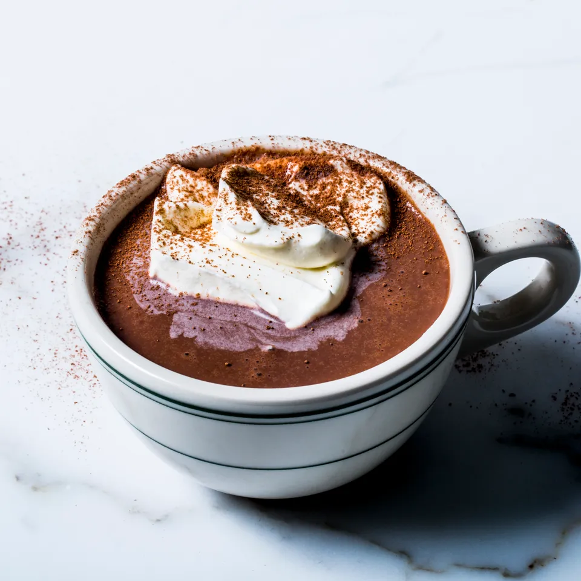

Chocolat-y Hot chocolate

Hot Chocolate
This is SOOO Good in those COLD Months! Who doesn't love a hot chocolate. Sooo chocolatey and creamy. Let's take this classic hot beverage and improve on it.
Don't fall into the trap by following the instructions on a can of hot chocolate mix. Its time to step up your game! It doesn't even take that much effort. Just a little patience and you will be rewarded.
Ingredients
- Fun size Hershey's Bar
- Marshmellow (large)
- 1 cup of Milk (preferrable whole but any kind works)
- 3 tablespoons of Hot Chocolate powder
Steps
- Grab your favorite mug.
- Fill up the mug 3/4 full of milk
- Place the mug and milk in the microwave until piping hot.
- Quickly add Hershey's bar and stir until disolved
- Scoop in as much of the Hot Chocolate powder as possible. It should be about 3 tablespoons but depends on your mug size. Stir that in until throughoutly mixed
- Add a large Marshmellow
- Time To Enjoy! Becareful, it could be hot.